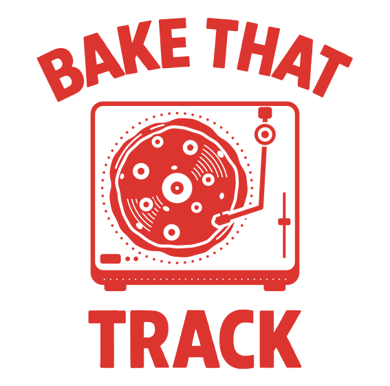

Ta commande
…
On cherche ton ticket.
- Reçue
- Au four
- Prête
Garde cette page ouverte : ton téléphone sonne et vibre quand ta pizza sort du four.

Ta commande
…
On cherche ton ticket.
Garde cette page ouverte : ton téléphone sonne et vibre quand ta pizza sort du four.